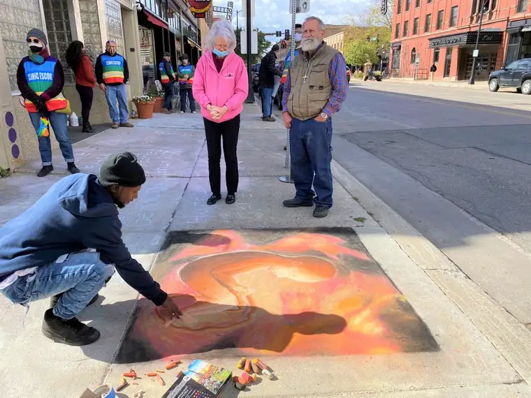
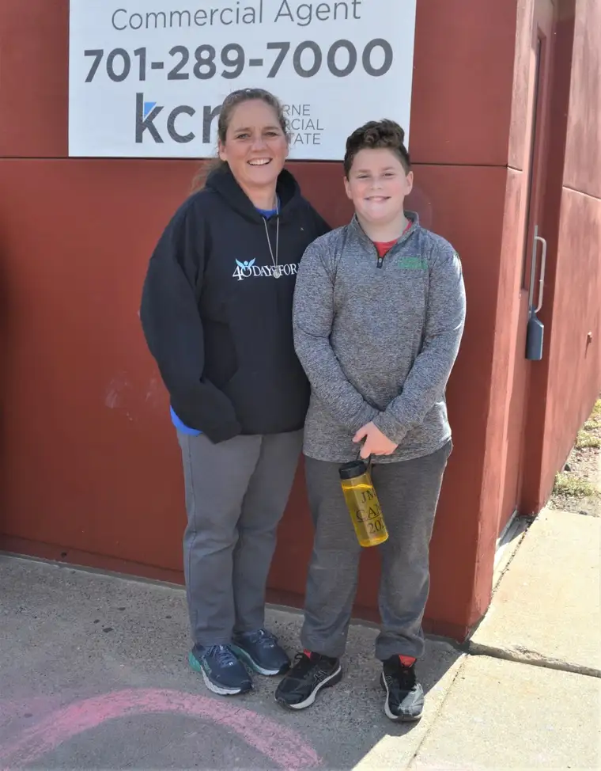

FARGO — As the man crouched down to better examine the chalk drawing, he touched his hand to the feet of the figure — a 38-week-old in-utero fetus imprinted into a sidewalk square in swirls of pinks, oranges and yellows — seemingly transfixed.
“It could be my kid, man,” he said moments later, identifying himself as Jean Oliver.
Seven hours earlier on that Sept. 30 morning, not long after dawn, 18-year-old Maria Loh had arrived at the Red River Women’s Clinic, 512 First Ave. N., the only facility in North Dakota that performs abortions, with her palette of chalk and an 8-by-10 version of the drawing to guide her.
It was her first time joining the ecumenical 40 Days for Life prayer and fasting effort to end abortion with her art.
“My hope is that anybody who sees it will have a change of heart, or be encouraged, or just overall feel the power of God.”
“Art brings us all together,” Loh continued, noting that when people see beauty in art, they can appreciate it even without fully understanding its meaning. Throughout history, art has been used to convey knowledge, she said. Stained-glass windows told Biblical stories to a mostly illiterate world.
“Art was a way to spread the faith and tell people about these things,” Loh said, and remains an effective teacher today.
Mostly, she said, she wants to convey the truth that the unborn child “is a human life.”
Though not the featured event, Loh’s efforts inspired gazes and positive comments from many of the 75 or more gathered to hear the testimony of Sue Thayer, a former Planned Parenthood manager from Storm Lake, Iowa.
As Loh applied finishing touches to her piece, a prayer circle formed just east of the building comprising a Catholic priest, several Protestant pastors and 40 Days for Life North Dakota committee members. A short while later, Thayer, outreach director for 40 Days for Life national, stood in the bed of a pickup at the sidewalk’s curb as the Rev. Paul Letvin opened with a prayer to God for “open minds and soft hearts” that all might “hear what your spirit is telling us today.”
The week prior, at the launch of the effort that happens nationally as well as in Fargo each fall, Letvin shared how hearing stories of regret and heartache from post-abortive women — along with experiencing a miscarriage with his wife — moved him to get involved.
Microphone in hand, Thayer shared how she’d promoted abortion for 18 years before becoming an unapologetic spokesperson for the unborn.

“I am proof God can forgive anything or anyone,” Thayer said, noting that “hundreds, maybe thousands” of abortions happened under her watch.
“And I had the hardness of heart that we see here today,” she continued, referring to the handful of clinic escorts standing within earshot. “I, too, thought I was doing a good thing.”
But something changed the day she read a handwritten note taped to the car window of a nearby businessman. It simply said, “You know in your heart that abortion is wrong.”
“That worked on me,” Thayer said. Though at the time, she found it “offensive,” she later recognized the message as “one of many seeds God planted… to help me see the error of my ways.”
The final straw came, she said, when the organization quietly announced its plan to begin offering “webcam abortions,” initiated by a pill consumed in the absence of in-person medical personnel. Voicing her concerns, she said she was fired.
Planned Parenthood offered Thayer a “really hefty” severance package, she said, along with a nondisclosure agreement that she never speak of having been employed there. “A month later, they called me and added more money to it — to increase the temptation,” she said. “I never touched it.”
Instead, she began volunteering for her local 40 Days for Life initiative, and eventually joined the national team. Thayer said if not for her new church family, which despite her former work “still loved me,” her spiritual transformation might not have been so complete.
“Love is what our friends here (clinic workers) need, too, because they’re not the enemy,” Thayer said. “It’s a spiritual battle, and the real enemy, the enemy of our soul, comes to steal, kill and destroy — and that’s what happens in there.”
As she talked, occasionally, passersby in vehicles expressed approval or disapproval of the gatheringwith a thumbs-up or “flipping the bird.”One motorcyclist slowed while passing the pickup, revving his engine loudly, seemingly to drown out Thayer’s voice.
But she persisted unflinchingly, sharing that the abortion industry bases its success on abortion numbers. Gone are the days of asserting abortions should be “safe, legal and rare,” she said; now it’s “free, on demand and without apology.”
Thayer thanked those praying during the 40 Days for Life events and beyond.
“The women going in, you might not stop them,” she said, “but you’re also the first face they see when they come out, and they need love and forgiveness.”
Mary Kaye Schneibel, Manvel, N.D., said she got emotional when Thayer talked about how her facility used to put the tiny human remains in “Ziploc bags,” and referred to the fridge where they kept them as “the nursery.”
“There’s so little hope in that,” Schneibel said, adding that she’s a “doer” and feels that by driving to the event, she was part of “history in the making.”


On the ground near where Thayer talked, Anna Brendemuhl, 21, Hope, N.D., sat half-kneeling with her video camera pointed toward the truck. Later, she shared why she and her family — including her parents and six siblings, ages 12 to 23 — pray there weekly, on Wednesdays, when abortions are scheduled.
“I video some of this to raise awareness and show people what it’s like out here,” she said.
Brendemuhl acknowledged that not everyone is comfortable with their presence.
“People don’t want you in their business,” she said. But she’s not deterred. “I just really believe it’s a baby. God tells us that and science tells us that, so we should be fighting for them.”
The prayer advocates aren’t motivated to shame anyone, she said. “I am protesting the babies
dying, but I’m also trying to help women. I’m also praying. I’m trying to change people’s hearts
and be a kind and loving person by showing God’s love.”
Earlier that day, the local 40 Days for Life committee sent an email to their 1,700 nondenominational supporters, reminding them of the fruits of their prayers these last 13 years.
“When I hear the cry of a newborn baby and see how God’s creation is so magnificent, I am reminded that since 2007, 101 babies have been saved from abortion in Fargo,” and “101 babies will share in the joy of life because of God’s grace and your faithfulness.”
The 2020 fall prayer vigil ends Nov. 1. For more information or to sign up to pray, visit 40daysforlifend.com or call 701-284-6601 or 701-356-7979.
[For the sake of having a repository for my newspaper columns and articles, I reprint them here, with permission, a week after their run date. The preceding ran in The Forum newspaper on Oct. 23, 2020.]